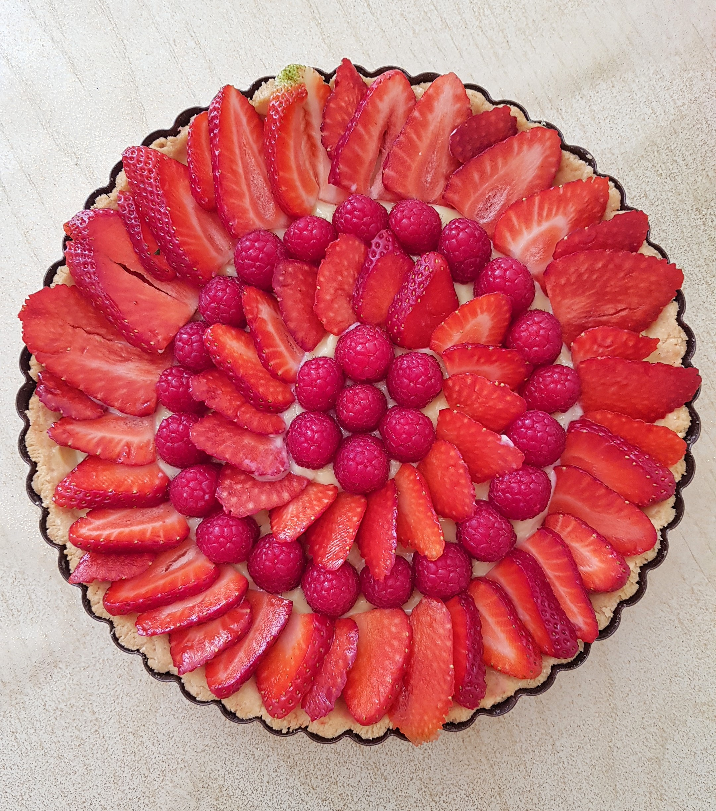
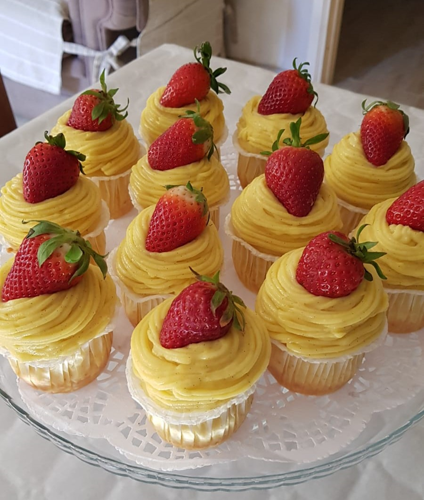
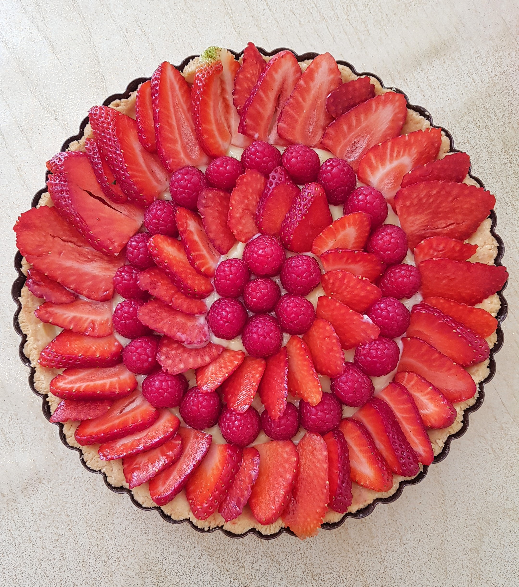
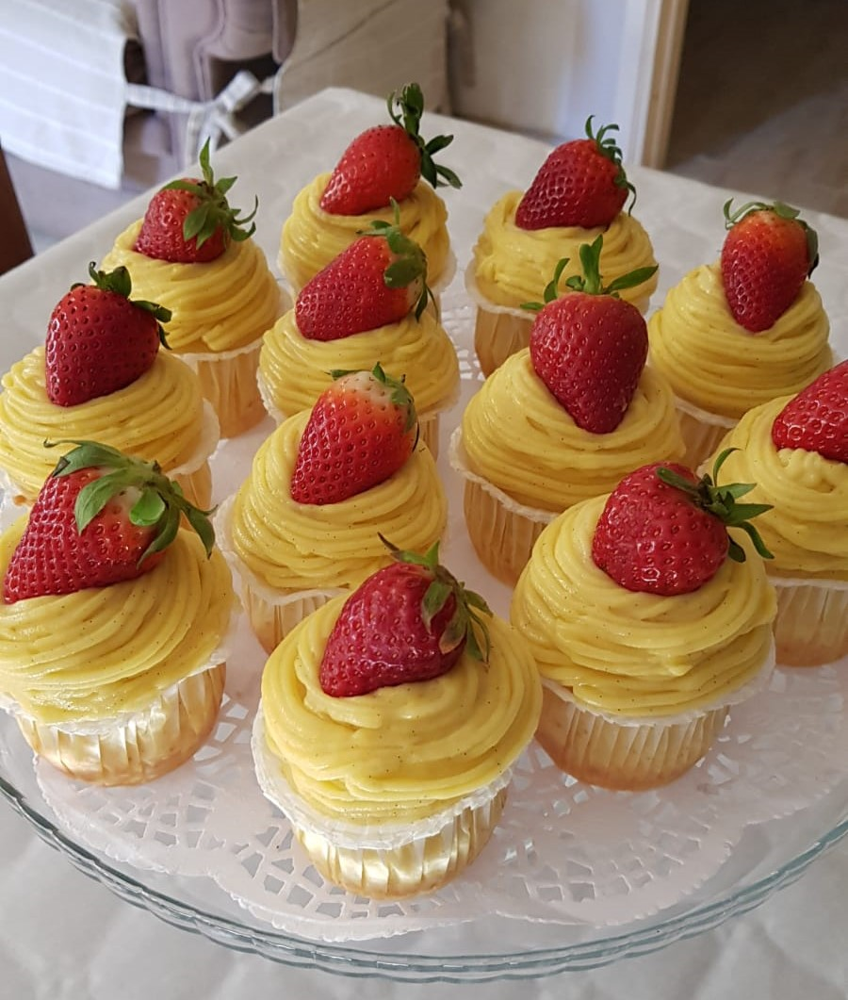
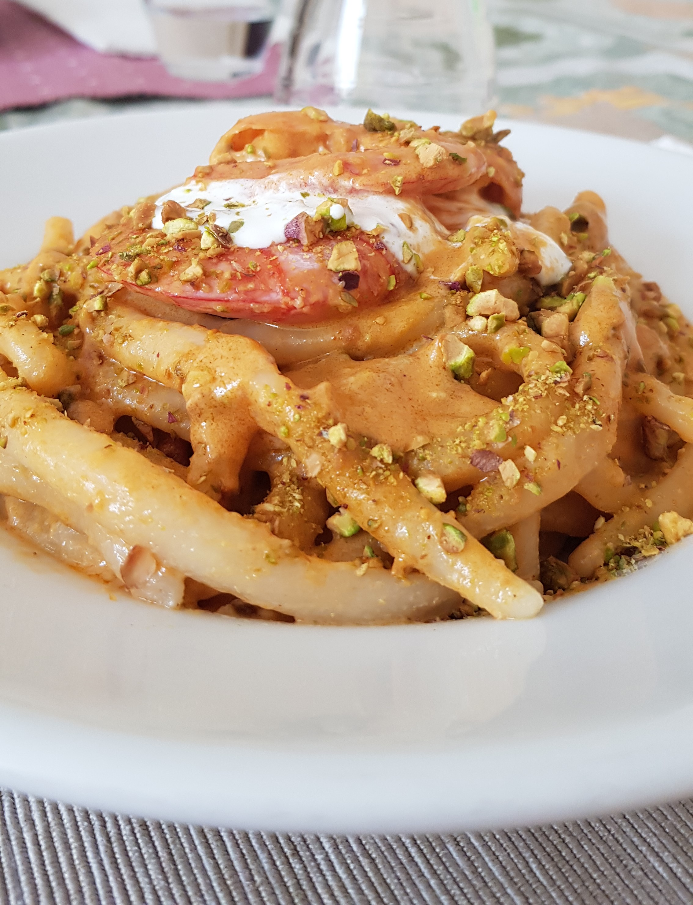
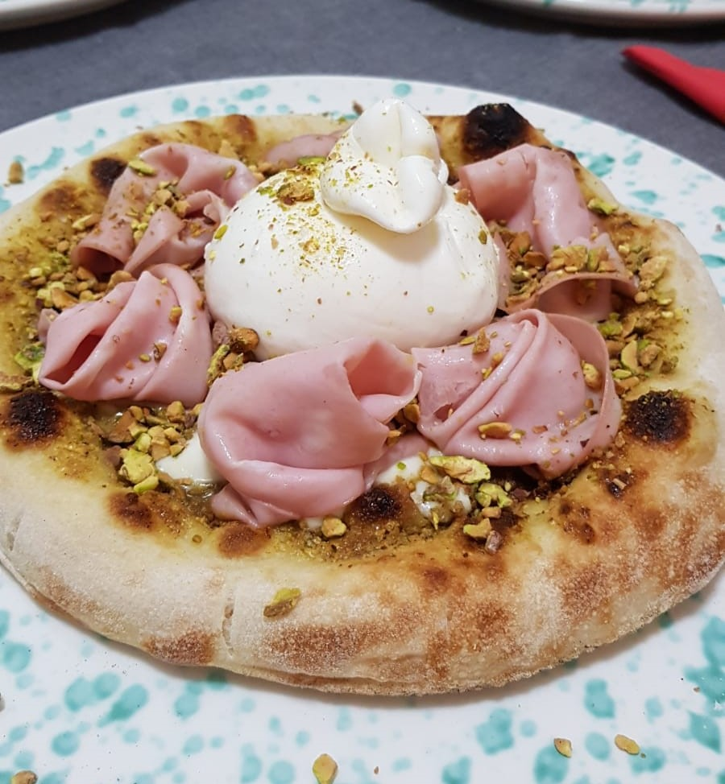
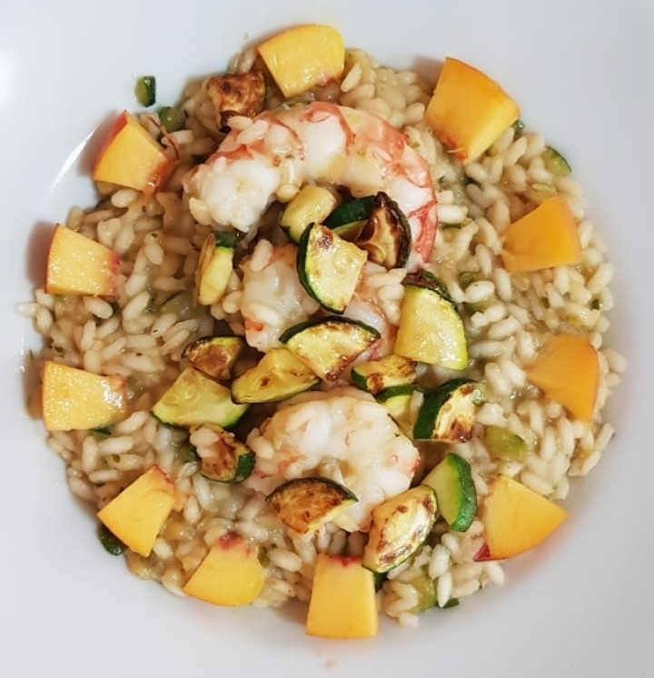

Le ricette di Elisabeth
Ciao, mi chiamo Elisabeth Vacca e sono una studentessa del corso di Ingegneria Informatica ed Elettronica, matricola IN0500545,
curriculum Applicazioni Informatiche, presso l'Università di Trieste.
Fin da piccola, sono sempre stata appassionata di cucina, così, approfittando della consegna di creare un sito web per l'ammissione alla provetta di Reti di Calcolatori,
ho deciso di creare un blog con alcune delle mie ricette preferite.
Colazioni
Pancake Soffici come una nuvola che renderanno piacevole anche un lunedì mattina
 



Aperitivi
Pizzette morbide, ideali per ogni momento della giornata

Primi
Paccheri ai gamberi, un primo che stupirà i vostri amici


